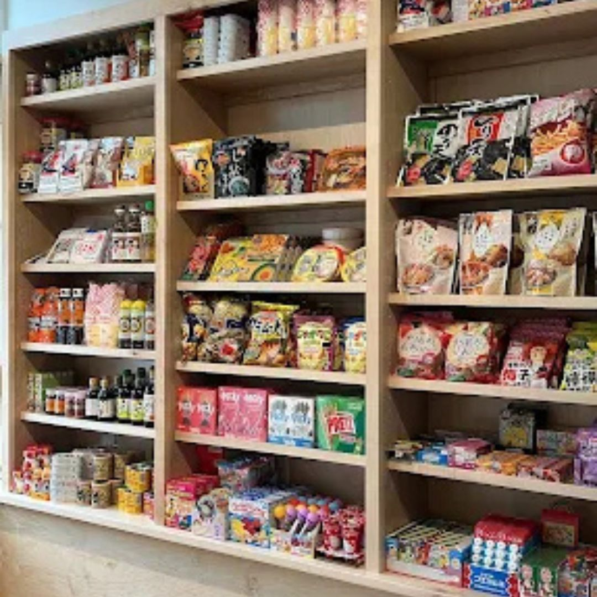
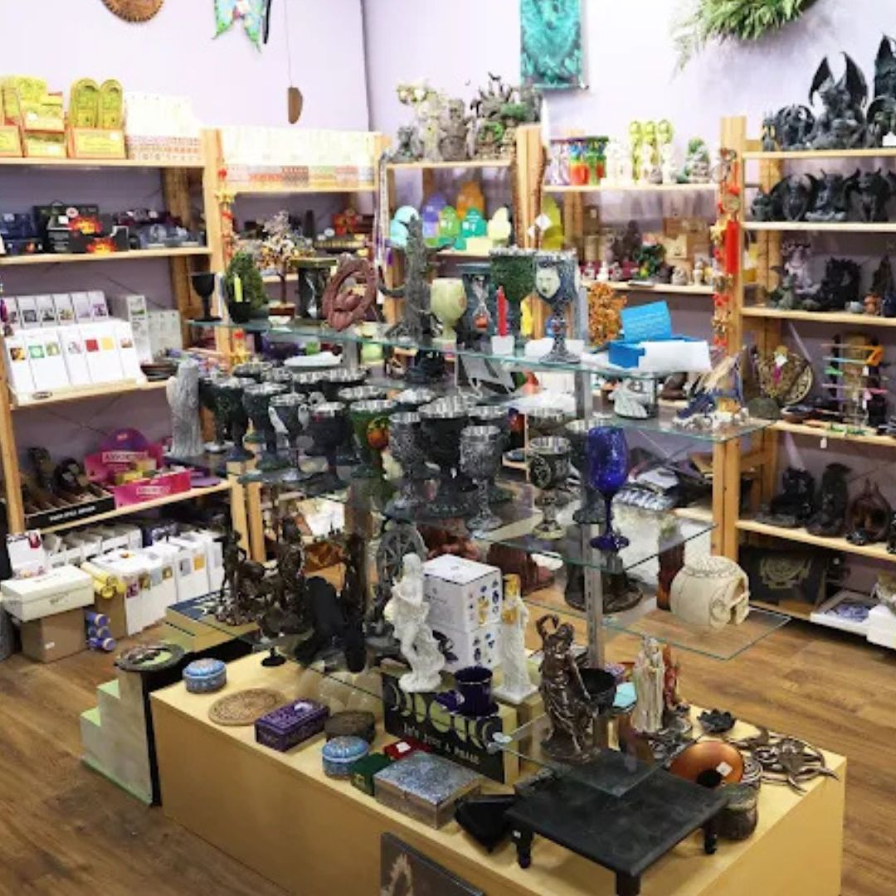
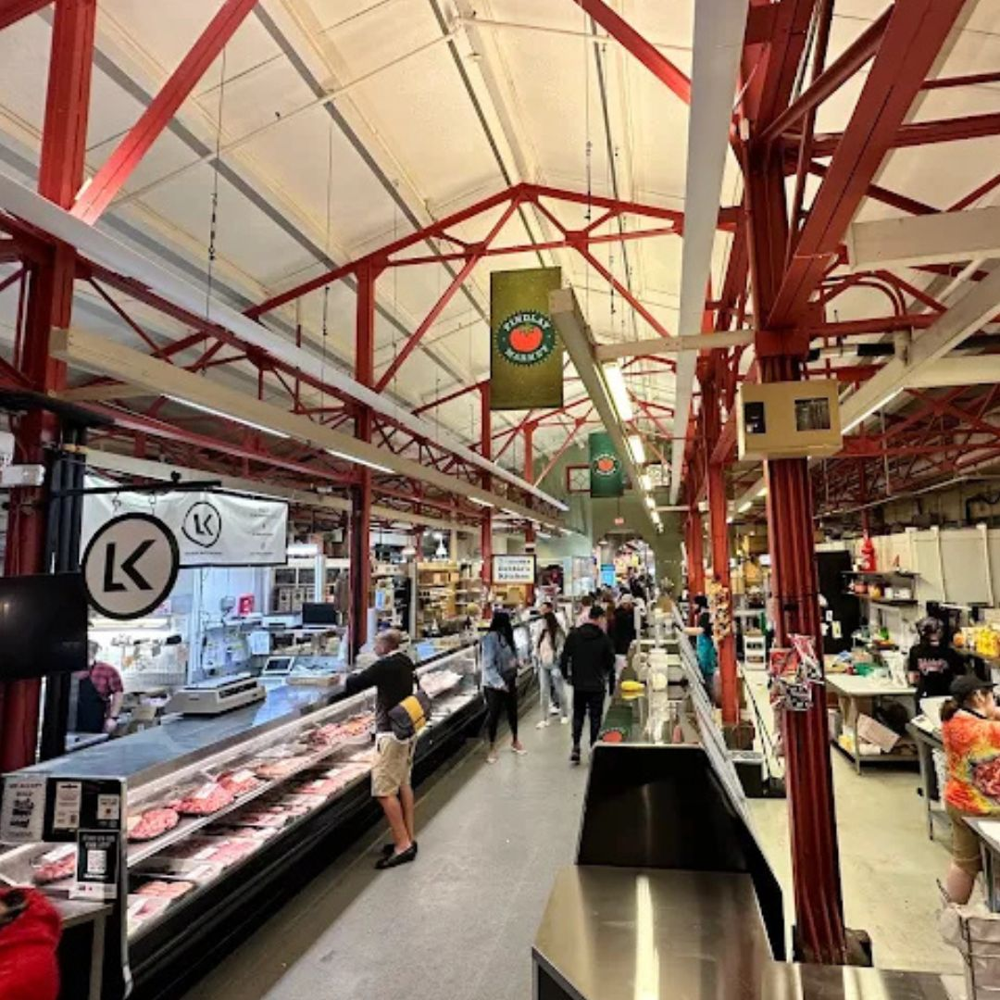
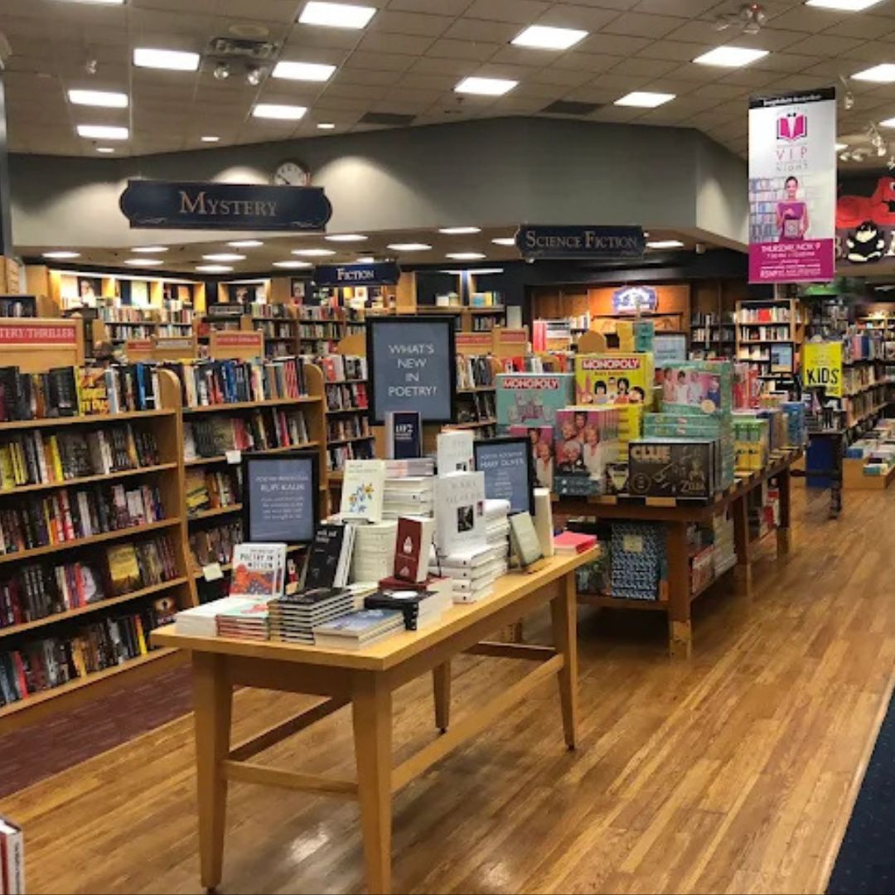
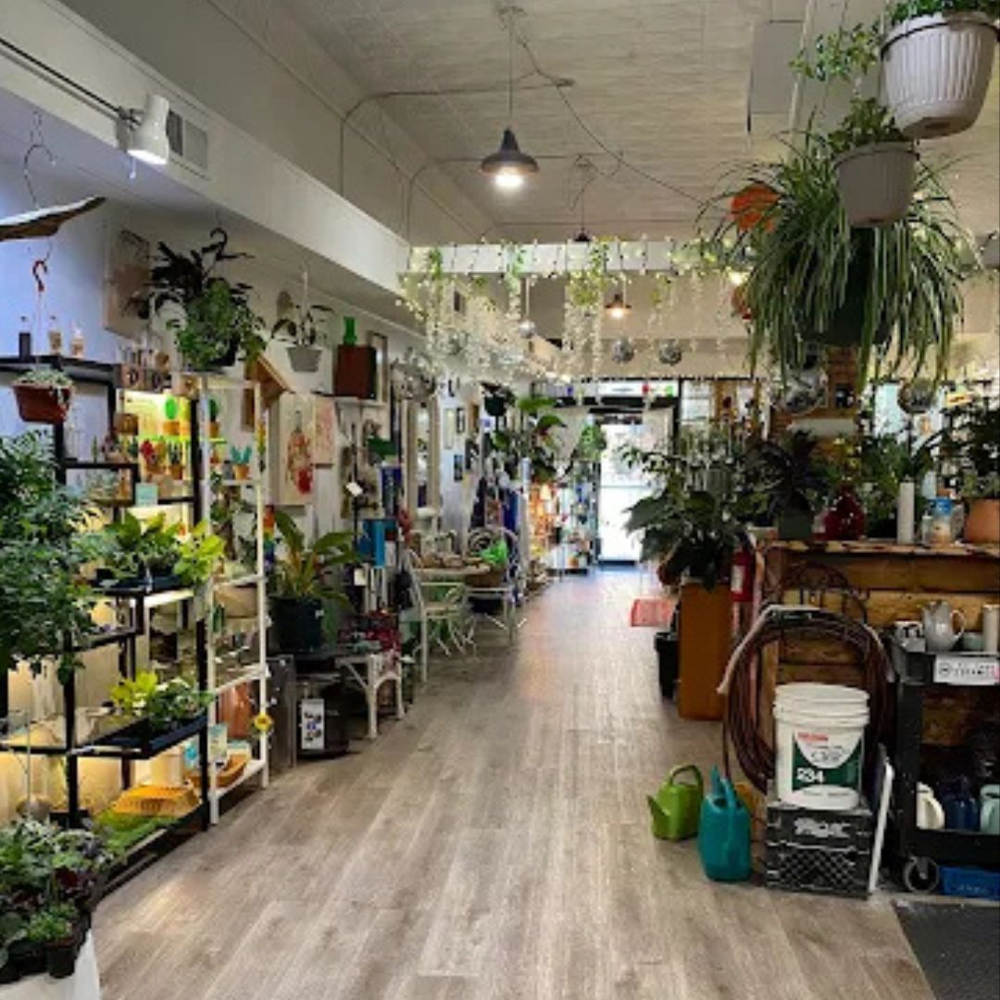

Shop
Travel to Japan @ Daruma
From Ramen to Pocky, stock up on your favorite Japanese finds.

Find magic @ Enchanted Moments
Look at their extensive crystal collection, esoteric books, and more.

Sample different food @ Findlay Market
Walk through the aisles and try all different kinds of cuisines served here.

Find your next read @ Joseph-Beth Booksellers
Mystery books, language books, history books -- you name it, they've got it.

Gather planty finds @ The Potted Palm
They host different events all the time where you can get your hands in the dirt and have fun.
